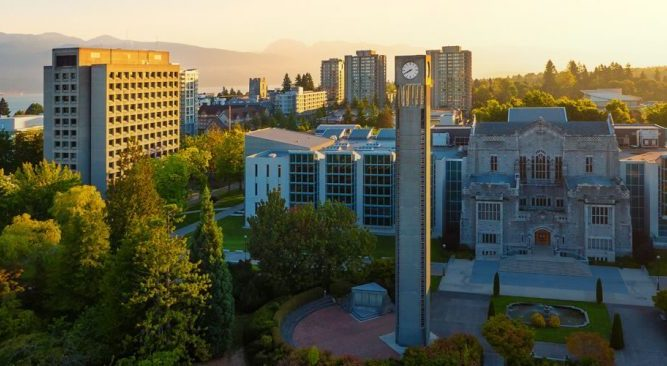

The workshop at the University of British Columbia (Vancouver, Canada) has been postponed by one more year due to COVID.
Therefore, we decided to have a series of online sessions on selected topics during this summer.
The sessions have a maximum length of two hours and consist of a few presentations and time for discussion.
The video seminar will be held on Zoom. There is no registration required.
You can download the online seminar programme and Zoom credentials
here
Workshop on Physical Processes in Natural Waters (PPNW)
The PPNW workshop explore the physics of lakes and coastal water bodies. They look at the interactions with
the physical and biogeochemical processes that control water quality, ecosystem functions, and the services
these systems provide.
The open workshop seeks to expand contacts with neighbouring fields such as physical oceanography, the
atmospheric sciences, and engineering. With forty to sixty participants and a small number of invited
speakers, the PPNW meetings combine an active workshop atmosphere with a comfortable timeframe for
presentations and discussions.
International Steering Committee
-
Chairman —
Bertram Boehrer
, Helmholtz Centre for Environmental Research (UFZ), Germany
-
Josef Ackerman
, University of Guelph, Canada
-
Hrund Andradóttir
, University of Iceland, Reykjavik, Iceland
-
Lars Bengtsson
, Lund University, Sweden
-
Damien Bouffard
, EAWAG, Kastanienbaum, Switzerland
-
Lee Bryant
, University of Bath, U.K.
-
Xavier Castamitjana
, University of Girona, Spain
-
Giuseppe Ciraolo
, University of Palermo, Italy
-
Nikolai Filatov
, Karelian Research Centre of RAS, Petrosavodsk, Russia
-
Andrew Folkard
, Lancaster University, United Kingdom
-
Georgiy Kirillin
, Institute of Freshwater Ecology IGB, Berlin, Germany
-
Charles Lemckert
, University of Canberra, Australia
-
Madis-Jaak Lilover
, Marine Systems Institute, Tallinn, Estonia
-
Andreas Lorke
, University of Koblenz-Landau, Germany
-
Daniel McGinnis
, University de Genève, Switzerland
-
Francisco Rueda
, University of Granada, Spain
-
Geoffrey Schladow
, University of California, Davis, U.S.
-
Adolf Stips
, European Commission, Italy
-
Arkady Terzhevik
, Karelian Research Centre of RAS, Russia
-
Marco Toffolon
, University of Trento, Italy
-
Lars Umlauf
, Leibniz-Institute for Baltic Sea Research IOW, Warnemuende, Germany
-
Timo Vesala
, University of Helsinki, Finland
-
Danielle J. Wain
, 7 Lakes Alliance, Belgrade Lakes, U.S.
-
Alfred Wüest
, EPFL, Lausanne, Switzerland
-
Ram Yerubandi
, Canada Centre for Inland Waters, Burlington, Canada
Past conferences
2021 - Next workshop

University of British Columbia, Vancouver, Canada on June 26-30th, 2020
Website
2020
Video conference - 15th-19th June 2020
Website
")
")